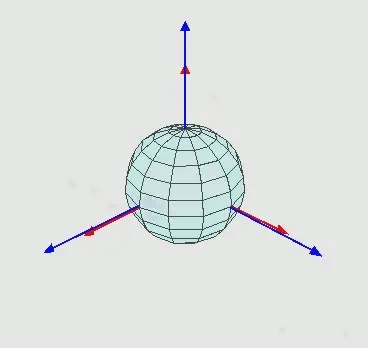
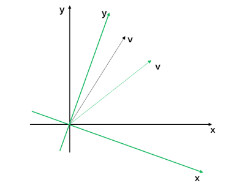

旋转矩阵和坐标系
以台湾大学林沛群教授的机器人学课程为例，链接内容：https://www.bilibili.com/video/BV1v4411H7ez
旋转矩阵
第一章可以跳过，第一章讲的啥，其实就是两个坐标系之间的旋转矩阵。没啥好说的，3x3 的矩阵，然后其实可以用三个角度来表示。如下图是绕着 Z 轴旋转 \(\theta\) 角度的旋转矩阵。

如果非要看第一章的内容，记住一句话：课程里面的 frame 其实就是坐标系。
旋转
第二章也可以跳过，第二章很重要，但是讲的不好。这篇文章讲的很好，下面进行个人记录。
两种旋转方式
首先，旋转似乎很简单，几个坐标轴转呗。但其实有固定坐标系旋转和机体坐标系旋转两种方式。
- 固定坐标系旋转：就是绕着始终不动的固定轴。
- 机体坐标系旋转：就是绕着机体本身的坐标轴。
最最经典的例子：飞机旋转。
- 固定系：按照地面坐标系，正东正北为 X 和 Y 轴，Z 轴垂直于地面向上。无论飞机怎么绕这几个轴始终没动过。
- 机体系：按照飞机自身，机头向前为 X 轴，机翼为 Y 轴，垂直于机翼向上为 Z 轴。此时飞机运动之后，坐标轴发生了变化。比如飞机绕着 Z 轴旋转之后，X 和 Y 轴就不再是之前的 X 轴和 Y 轴了。
核心问题
核心问题就是：某个向量绕 X 轴转一下、绕 Y 轴转一下、绕 Z 轴转一下，求最终的向量，或者说，求向量终端的点坐标。
由于有两种旋转方式，所以要分类讨论，如果按照固定坐标系怎么绕；如果按照机体坐标系怎么绕。
似乎很简单？我知道绕 X 轴旋转某个角度的旋转矩阵是 \(R_1\)，绕 Y 轴旋转某个角度的旋转矩阵是 \(R_2\)，绕 Z 轴旋转某个角度的旋转矩阵是 \(R_3\)，那我直接相乘不就行了吗？
这些矩阵很好求，比如：
但是：左乘还是右乘？ 也就是 \(R1*R2\) 还是 \(R2*R1\)？
固定坐标系旋转的推导
下面第一种情况，假设我们按照固定坐标系转。我们就统一按照先 X 轴转，然后 Y 轴转，最后 Z 轴转。求这三次旋转的各自角度，矩阵符号就用 \(R1, R2, R3\)。
上一小章节可以知道，核心是左乘还是右乘，先给出结论，是左乘：
定理一：固定坐标系旋转，应该是左乘
这个直接可以通过空间想象得到。旋转矩阵 \(R\) 的意义，就是某个点 P 变成另一个点 P'，现在假设我已经绕 X 轴转动了，此时坐标是 \(R1 * p\)，此时再绕 Y 轴转动，坐标就是 \(R2 * (R1 * p)\)，很显然这是左乘。
所以最终 \((R_3R_2R_1) * p\) 就是最终的向量，或者说最终的点坐标。
机体坐标系旋转的推导
还是按照绕 X 轴转，然后 Y 轴转，最后 Z 轴转。求这三次旋转的各自角度，矩阵符号就用 \(R1, R2, R3\)。

一开始，\(R1\) 是一样的，但是此时绕 Y 轴转，就和固定坐标系绕 Y 轴旋转不同了。这里给出结论，是右乘：
定理二：相机坐标系旋转，应该是右乘
首先坐标系 0 绕 X 轴转，转到了坐标系 1；此时坐标系 1 绕 Y 轴转，变成了坐标系 2。求出点 p 旋转之后，在坐标系 0 的坐标。

-
第一个子问题，先忽略坐标系 0，假设点 q 在坐标系 1 中的坐标为 \(q_1\)，此时绕 Y 轴转，变成了点 \(q'\)，求出 \(q'\) 在坐标系 1 中的坐标 \(q'_1\)
很简单，这就是一个最最原始的旋转问题，可得：\(q'_1 = R2 * q_1\)。
-
第二个子问题，点 p 在坐标系 1 中的坐标为 \(p_1\)，求点 p 在坐标系 0 中的坐标 \(p_0\)。
这是坐标系的旋转，具体就可以理解成，向量顺时针转，就相当于坐标系逆时针转。有结论：\(p_0 = R1 * p_1\)。
-
第三个问题，点 p 在坐标系 0 中的坐标为 \(p_0\)，绕 X 轴变成了点 q，求点 q 在坐标系 1 中的坐标 \(q_1\)。
理解成坐标系和点在进行整体移动，很直观可以得到：\(q_1 = p_0\)。
现在理一下，首先点 p 绕 X 轴后得到点 q，再绕 Y 轴后得到点 \(q'\)，我们需要求 \(q'_0\) 和 \(p_0\) 之间的关系。
根据那么可以得到：
因此，最终可以得到，按照机体坐标系，应该是右乘。
扩展
- 机体坐标系中，不仅仅可以 X-Y-Z 这种旋转，其实还可以 X-Y-X 这样旋转，这种也是可以做到三维改变的效果
- 由于机体坐标系是右乘，固定坐标系是左乘，所以显然：固定坐标系 X-Y-Z 旋转等价于机体坐标系按照同样的角度 Z-Y-X 旋转。
总结
重点就是记住：旋转有两种方式，而且一个对应左乘，一个对应右乘。遇到旋转问题时，一定要弄清楚是哪种旋转方式，这样才理解方程。
但其实机器人这里好像大部分用机体坐标系。